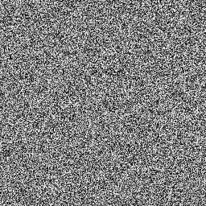

Fast 2D Clouds：1280x720 静态帧
10,740,326,400 个 lane-op（约 11,654 op/pixel）渲染出的云层帧，与精确整数参考逐像素完全一致：差异像素 0，最大通道差 0。
真实输出：可检查的最终帧
视觉算法基于 Sinuosity 于 2014 年发布的 ShaderToy《2D Fast Clouds》。本项目保留其双 fBm、8 个 octave、curl 旋转、smoothstep 与颜色混合结构，并将浮点 shader 重写为可由本项目 16-bit ISA 执行和逐步审计的定点版本。 查看 ShaderToy 原作 →

输入纹理（下图）是仓库内置的 256x256 Gray Noise Medium，以只读纹理 RAM（含 mip 存储）的形式提供；纹理寻址、repeat、mipmap 坐标与插值全部由 ISA 指令计算。

关键数字
shader 怎样映射到 ISA
原 GLSL 的结构被完整保留：双 fBm、8 个 octave、curl 旋转、smoothstep 与颜色混合。浮点运算被编译为定点指令（Q17.15 坐标、Q0.8 颜色）；坐标变换、fBm 累加、smoothstep 与颜色混合只使用训练过的 ADD/ADC/SUB/SBC/AND/OR/XOR/SHL/SHR/CMP。
纹理读取严格走 LOAD → RAM → MOVI：repeat、mipmap 坐标与双线性插值由 Neural CPU 指令计算，RAM 只返回字节。torch.where 只承担 SIMD 分支路由，其条件来自 Neural CPU 的 CMP flags。
1280x720 = 921,600 个像素彼此独立，同一条 shader 指令在所有像素上形成大 batch；每一个“某条 lane 上执行一次指令”记为一个 lane-op。这就是总量达到 10.7B、且能被 GPU 高效执行的原因。
由 Neural CPU 执行
- 双 fBm 与 8 个 octave 的定点累加；
- curl 旋转；
- smoothstep 与颜色混合；
- 纹理寻址、repeat、mipmap 坐标与双线性插值；
- 驱动分支路由的 CMP flags。
由外部运行时承担
- 整数像素坐标与时间常量；
- 只读纹理 RAM 与 mip 存储（只按地址返回字节）；
- SIMD lane 调度与分支路由（torch.where）；
- framebuffer。
审计模式
| 模式 | 含义 | Config 开关 |
|---|---|---|
| 神经渲染 + 审计（默认） | 渲染整帧并统计 register、flag、control 三类错误（本次均为 0）；最终帧再与精确整数参考逐像素对比，差异像素 0，最大通道差 0。 | REFERENCE_ONLY = False |
| 精确整数参考 | 只生成精确整数参考并核算操作量，不加载神经权重。 | REFERENCE_ONLY = True |
运行方法
python scripts/render_neural_cpu_fast_clouds_frame.py所有参数位于脚本顶部的 Config，最常改的几项：
| 参数 | 默认值 | 含义 |
|---|---|---|
| WIDTH | 1280 | 输出帧宽（像素）。 |
| HEIGHT | 720 | 输出帧高（像素）。 |
| TIME_SECONDS | 32.95 | shader 的时间常量 t。 |
| TILE_PIXELS | 65_536 | 每个 tile 处理的像素 lane 数。 |
| INTERPOLATION_BITS | 7 | 纹理插值的定点精度位数。 |
| REFERENCE_ONLY | False | 只生成精确整数参考，不运行神经渲染。 |
相关文件
{kind=link}
限制与不声称的内容
- 本帧未使用以下捷径：乘法 LUT、三角函数 LUT、由 PyTorch 代算的 shader 中间量、低分辨率放大。1280x720 中的每个像素都由 ISA 指令算出。
- 逐像素一致的结论针对这一输出帧与上述参数成立，不是“任意输入永不出错”的保证；全局单步错误率的口径见可靠性页。 可靠性页 →
- 本页报告的是一张静态帧的渲染审计，不构成实时渲染性能声明。